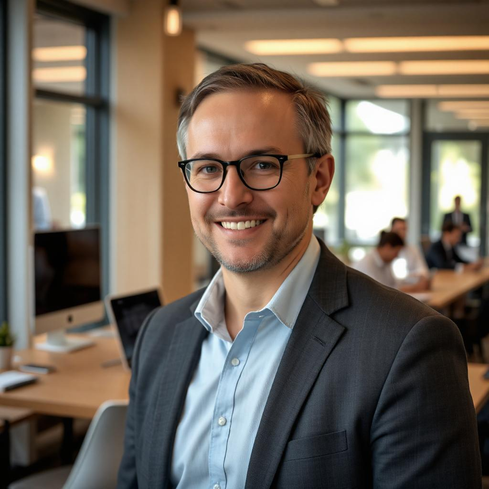
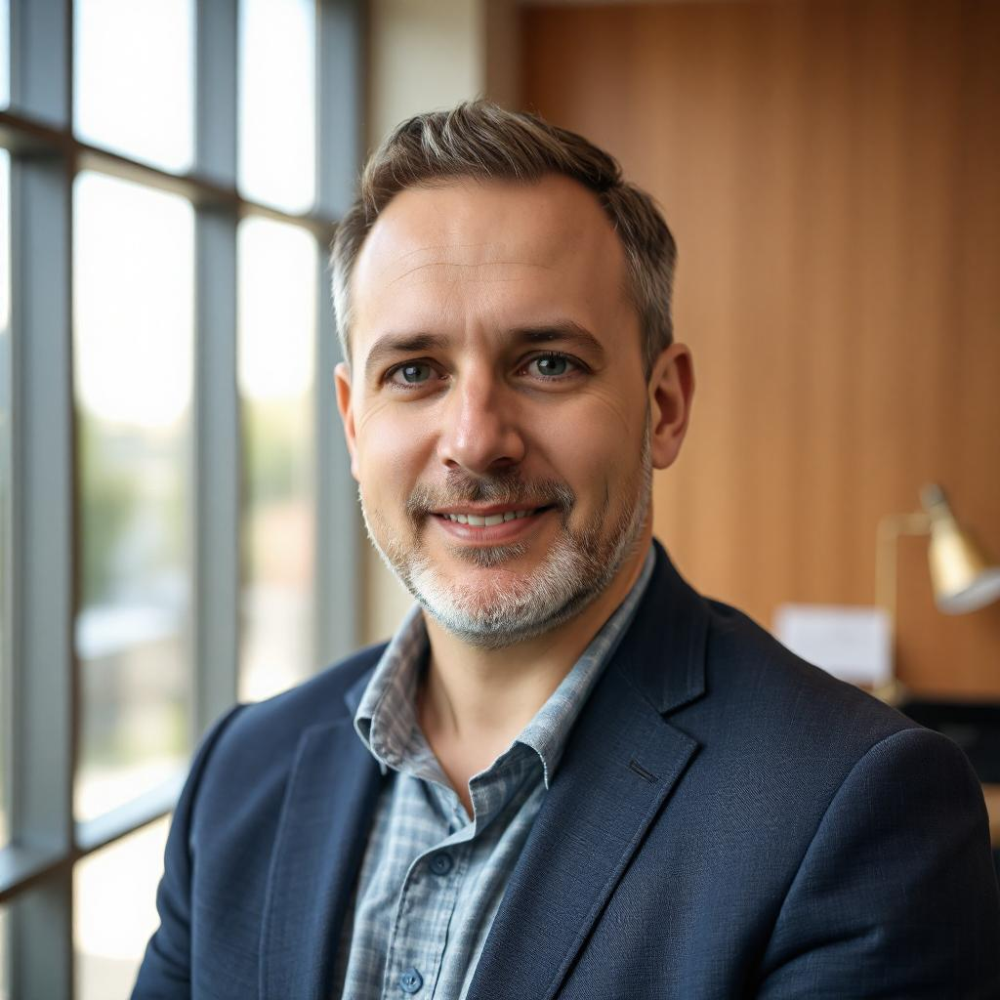

Our History
TechCon began in 2010 as a small meetup of passionate developers and tech leaders. Over the years,
it has grown into one of the most influential technology conferences, attracting thousands of
participants globally and shaping the direction of innovation.

Our Mission
TechCon 2024 is driven by a simple yet powerful mission: to foster innovation, share knowledge, and
empower future leaders in technology. Our goal is to provide a collaborative space for learning,
networking, and sparking ideas that change the world.

Past Notable Speakers
Dr. Bernard Smith

A renowned software engineer and AI researcher, Dr. Bernard shared groundbreaking insights
on ethical machine learning at TechCon 2022.
Linda Harris
CEO of a leading Lindtech startup, Linda inspired attendees with her journey from developer
to industry leader and her work on inclusive tech in Africa.
Prof. Alvin Peters

A cybersecurity expert and professor, Prof. Alvin captivated the audience with a live demo
on the future of data protection and security.